Vision Based Navigation
Computer Vision Group - TUM
Practical Course: Vision Based Navigation
Lecture 1: Introduction, 3D Geometry and Lie Groups
Mateo de Mayo, Jason Chui, Jonathan Eichhorn
Prof. Dr. Daniel Cremers

Version: 01.04.2026
Introduction
Applications of Navigation Algorithms
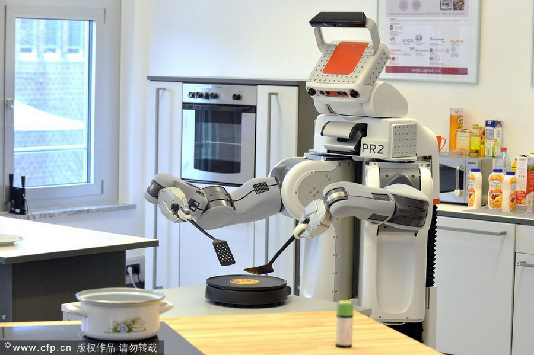
Sensors for Navigation
- Sensor provide the way to measure the state of the environment
- Interoseptive sensors: accelerometer, gyroscope …
- Exteroceptive sensors: camera, laser rangefinder, GPS …
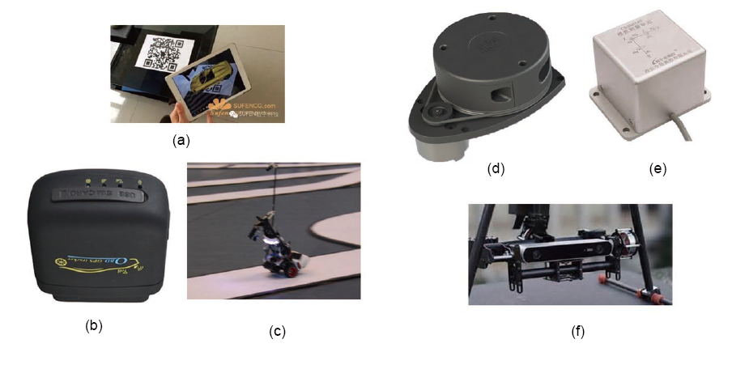
Benefits of Cameras
- Cheap
- Low power
- Lightweight
- Widely commercially available
- Passive (no interference)
- Note: very similar to human “sensors”
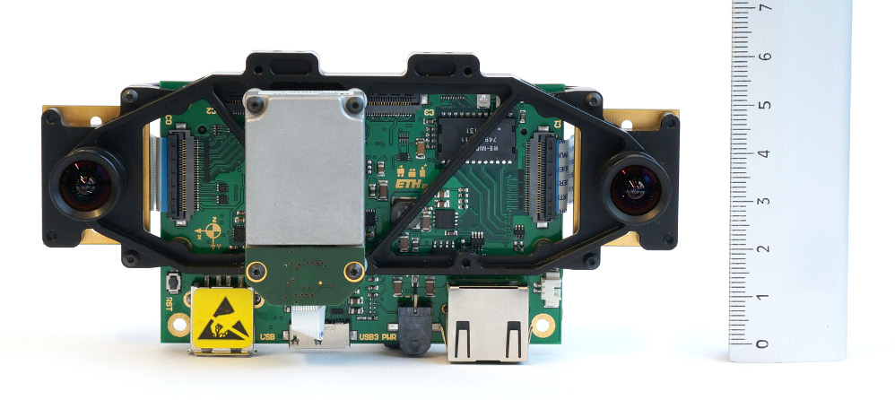
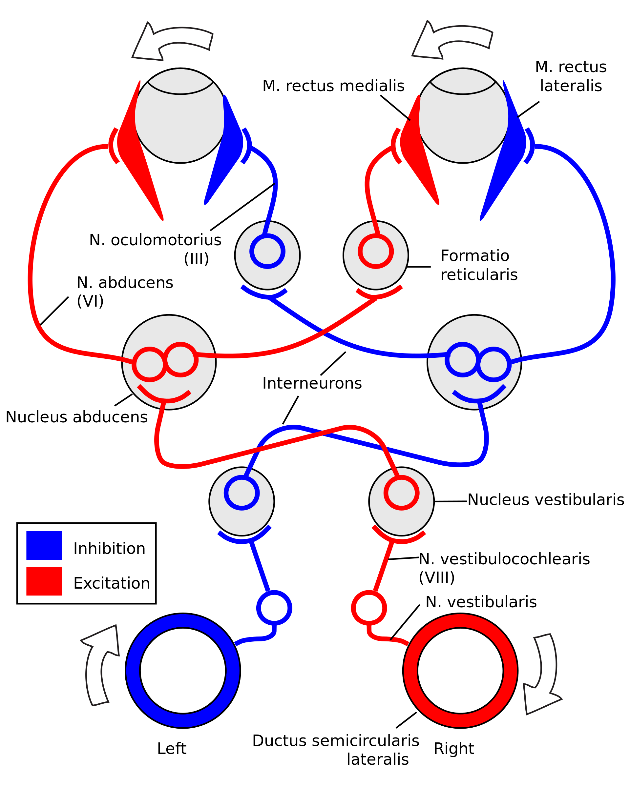
Types of cameras
- Cameras
- Monocular
- Stereo
- RGB-D
- Event camera,
- …
Stereo Cameras
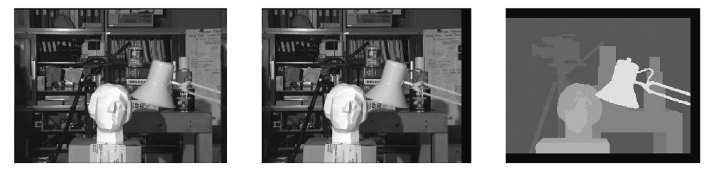
Moving stereo: disparity can be estimated in the motion
Content of the Practical Course
You will implement three main components distributed in 5 exercises:
- Camera Calibration
- Structure from Motion (SfM)
- Visual Odometry (VO)
Implementation is done using:
- C++
- Eigen for linear algebra
- Sophus for Lie groups
- OpenGV for multiple view geometry algorithms
- Ceres for optimisation
- Pangolin for visualisation
- Git
- Supported OS: Ubuntu 22.04, 24.04, 26.04
- Unsupported but likely to work with some effort: MacOS (easier) and Windows
The code is optimised for easy understanding and prototyping. We rely on Ceres auto-differentiation to compute Jacobians (slower than analytical Jacobians, but much lower development efforts).
Camera Calibration
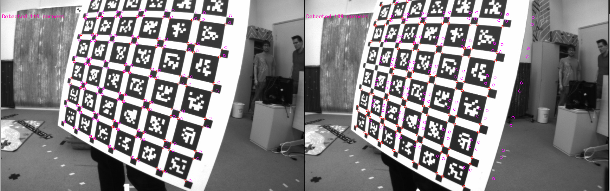
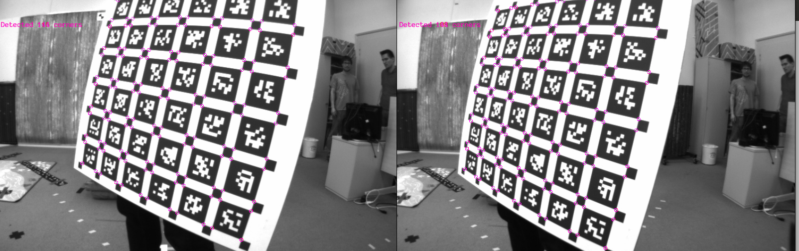
Structure from Motion (SFM)
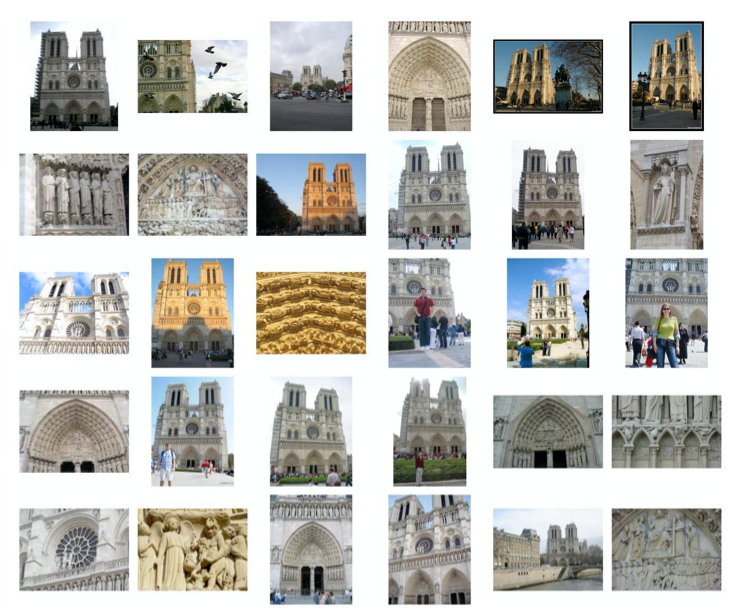
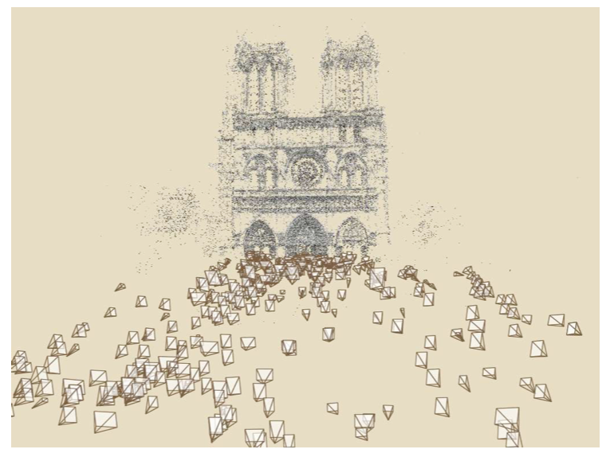
Dubrovnik SfM Video Example
What You Will Implement (SFM)
SfM Homework Demo
Visual Odometry / SLAM
ORB-SLAM Video
What You Will Implement (VO)
VO Homework Demo
Recommended Literature
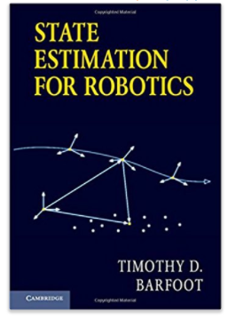
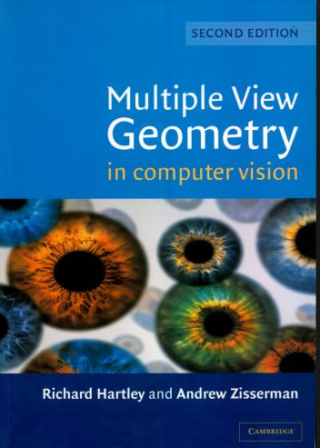
Multiple View Geometry
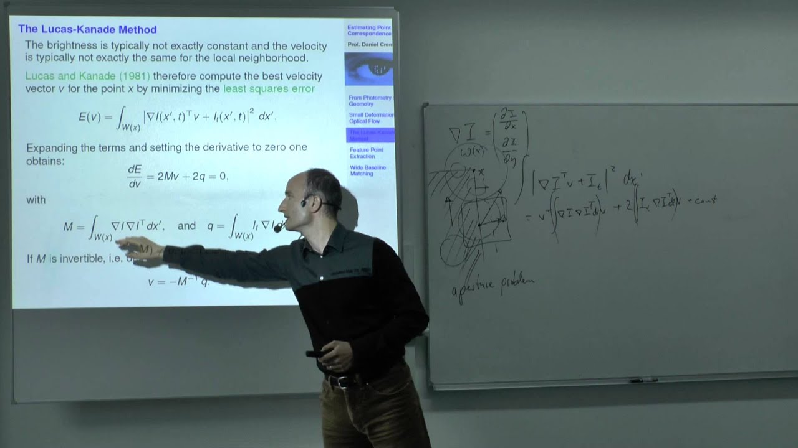
Video: https://www.youtube.com/watch?v=RDkwklFGMfo&list=PLTBdjV_4f-EJn6udZ34tht9EVIW7lbeo4
Due to the issues with camera exposure we encourage you to download and follow the PDF version of the slides (link in the description of the corresponding lecture)
3D Geometry and Lie Groups
Vector Space
A set V is called a linear or vector space over the field \(\mathbb{R}\) if it is closed under vector summation
\[+ : V \times V \rightarrow V\]
and under scalar multiplication
\[\cdot : \mathbb{R} \times V \rightarrow V\]
i.e. \(\alpha v_1 + \beta v_2 \in V, \forall \alpha, \beta \in \mathbb{R}\). With respect to addition (\(+\)) it forms a commutative group (neutral element 0, inverse element \(-v\) ). Scalar multiplication respects the structure of \(\mathbb{R} : \alpha (\beta v) = (\alpha \beta) v\). Multiplication and addition respect the distributive law:
\[ \begin{aligned} (\alpha + \beta) v = \alpha v + \beta v \\ \alpha (v + u) = \alpha v + \alpha u \end{aligned} \]
Example: \(V = \mathbb{R}^n, v = (x_1, \ldots, x_n)^T\)
A subset \(W \in V\) of a vector space \(V\) is called subspace if \(0 \in W\) and \(W\) is closed under \(+\) and \(\cdot\) (for all \(\alpha \in \mathbb{R}\)).
In this course we use Eigen Library to represents vectors and matrices. Please have a look at the Eigen Quick Reference Guide.
Linear Independence and Basis
The spanned subset of a set of vectors \(S = \{v_1, \ldots, v_k\} \subseteq V\) is the subspace formed by all linear combinations of these vectors:
\[span(S) = \left\{ \sum_{i=1}^k \alpha_i v_i \mid \alpha_i \in \mathbb{R} \right\}\]
The set S is called linearly independent if:
\[\sum_{i=1}^k \alpha_i v_i = 0 \implies \alpha_i = 0, \forall i\]
in other words: if none of the vectors can be expressed as a linear combination of the remaining vectors. Otherwise the set is called linearly dependent.
A set of vectors \(B = \{b_1, \ldots, b_n\}\) is called a basis of \(V\) if it is linearly independent and if it spans the vector space. A basis is a maximal set of linearly independent vectors.
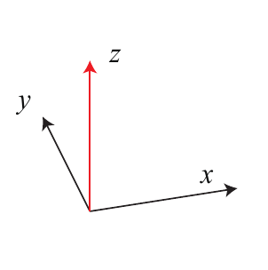
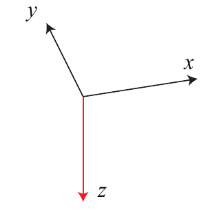
Inner Product
On \(V = \mathbb{R}^n\), one can define the canonical inner product for the canonical basis \(B = I_n\) as
\[\langle x, y \rangle = x^T y =\sum_{i=1}^n x_i y_i\]
which induces the standard \(L_2\) norm or Euclidean norm
\[\|x\| = \sqrt{\langle x, x \rangle} = \sqrt{ x_1^2 + \cdots + x_n^2 }\]
Two vectors \(v\) and \(w\) are orthogonal iff \(\langle v, w \rangle = 0\).
Three-dimensional Euclidean Space
The three-dimensional Euclidean space \(\mathbb{E}^3\) consists of all points \(p \in \mathbb{E}^3\) characterised by coordinates
\[X = (X_1, X_2, X_3) \in \mathbb{R}^3\]
such that \(\mathbb{E}^3\) can be identified with \(\mathbb{R}^3\). That means we talk about points (\(\mathbb{E}^3\)) and coordinates (\(\mathbb{R}^3\)) as if they were the same thing. Given two points \(X\) and \(Y\), one can define a bound vector as
\[v = X - Y \in \mathbb{R}^3\]
Considering this vector independent of its base point \(Y\) makes it a free vector. The set of free vectors \(v \in \mathbb{R}^3\) forms a linear vector space. By defining \(\mathbb{E}^3\) and \(\mathbb{R}^3\), one can endow \(\mathbb{E}^3\) with a scalar product, a norm and a metric.
Cross Product & Skew-Symmetric Matrices
On \(\mathbb{R}^3\), one can define a cross product
\[ \begin{aligned} \times : \mathbb{R}^3 \times \mathbb{R}^3 \rightarrow \mathbb{R}^3\\ u \times v = \begin{pmatrix} u_2 v_3 - u_3 v_2 \\ u_3 v_1 - u_1 v_3 \\ u_1 v_2 - u_2 v_1 \end{pmatrix} \end{aligned} \]
which is a vector orthogonal to both \(u\) and \(v\). Since the cross product is anti-commutative (\(u \times v = -v \times u\)), it introduces an orientation. Fixing \(u\) induces a linear mapping \(v \rightarrow u \times v\) which can be represented by the skew-symmetric matrix \(\hat{u}\) such that \(\hat{u} v = u \times v\).
\[ \begin{aligned} \hat{u} = \begin{pmatrix} 0 & -u_3 & u_2 \\ u_3 & 0 & -u_1 \\ -u_2 & u_1 & 0 \end{pmatrix} \in \mathbb{R}^{3 \times 3} \end{aligned} \]
In turn, every skew symmetric matrix \(M = -M^T\) can be identified with a vector \(u \in \mathbb{R}^3\).
Linear Transformation and Matrices
Linear algebra studies the properties of linear transformations between linear spaces. Since these can be represented by matrices, linear algebra studies the properties of matrices. A linear transformation L between two linear spaces \(V\) and \(W\) is a map \(L : V \rightarrow W\) such that, \(\forall x, y \in V, \alpha \in \mathbb{R}\):
- \(L(x + y) = L(x) + L(y)\)
- \(L(\alpha x) = \alpha L(x)\)
Due to the linearity, the action of \(L\) on the space \(V\) is uniquely defined by its actions on the basis vectors of \(V\). In the canonical basis \({e_1, \ldots, e_n}\) we have:
\[L(x) = Ax, \forall x \in V\]
where
\[A = (L(e_1), \ldots, L(e_n)) \in \mathbb{R}^{m \times n}\]
The set of all real \(m \times n\) matrices is denoted by \(\mathcal{M}(m, n)\). In the case of \(m = n\), the set \(\mathcal{M}(m, n) = \mathcal{M}(m)\) forms a ring over the field \(\mathbb{R}\), i.e. it is closed under matrix multiplication and summation.

The Linear Groups \(GL(n)\) and \(SL(n)\)
There exist certain sets of linear transformations which form a group. A group is a set \(G\) with an operation \(\circ : G \times G \rightarrow G\) such that:
- closed: \(g \circ h \in G, \forall g, h \in G\)
- associative: \(g \circ (h \circ z) = (g \circ h) \circ z, \forall g, h, z \in G\)
- neutral: \(\exists e \in G : e \circ g = g \circ e = g, \forall g \in G\)
- inverse: \(\forall g \in G, \exists g^{-1} \in G : g \circ g^{-1} = g^{-1} \circ g = e\)
Example: All invertible (non-singular) real \(n \times n\) matrices form a group with respect to matrix multiplication. This group is called the general linear group \(GL(n)\). It consists of all \(A \in \mathcal{M}(n)\) matrices for which:
\[\det(A) \neq 0\]
All matrices \(A \in GL(n)\) for which \(\det(A) = 1\) form a group called special linear group \(SL(n)\). The inverse of \(A\) is also in this group as \(\det(A^{-1}) = \det(A)^{-1} = 1\).
Matrix Representation of Groups
A group \(G\) has a matrix representation if there exists and injective transformation:
\[R : G \rightarrow GL(n)\]
which preserves the group structure of \(G\). That is, inverse and composition are preserved by the map:
- \(R(e) = I_{n \times n}\)
- \(R(g \circ h) = R(g) R(h) \quad \forall g, h \in G\)
Such a map \(R\) is called a group homomorphism.
The idea of matrix representations of a group is that they allow to analyse more abstract groups by looking at the properties of the respective matrix group.
- Example: The rotations of an object form a group as there exists a neutral element (no rotation) and an inverse (the inverse rotation) and any concatenation of rotations is again a rotation (around a different axis).
- Studying the properties of the rotation group is easier if rotations are represented by respective matrices.
#include <iostream>
#include <Eigen/Dense>
using namespace Eigen;
using namespace std;
int main()
{
Matrix2d mat;
mat << 1, 2,
3, 4;
Vector2d u(-1,1), v(2,0);
cout << "Here is mat*mat:\n" << mat*mat << endl;
cout << "Here is mat*u:\n" << mat*u << endl;
cout << "Here is u^T*mat:\n" << u.transpose()*mat << endl;
cout << "Here is u^T*v:\n" << u.transpose()*v << endl;
cout << "Here is u*v^T:\n" << u*v.transpose() << endl;
cout << "Let's multiply mat by itself" << endl;
mat = mat*mat;
cout << "Now mat is mat:\n" << mat << endl;
}Representations of Rotation
- Rotation representations:
- SO(3) matrices
- Rotation vectors (angle-axis)
- Euler angles
- Quaternions
For more rotation representations and conversions see:
Euler Angles
Any rotation can be decomposed into three principal rotations
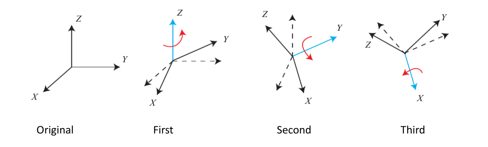
- Reasons not to use:
- Hard to combine rotations
- 12 different conventions exist (however yaw-pitch-roll is the most used one)
- Singularities are bad for optimisation.
- Euler angles have gimbal lock!
- Singularity always exist if we want to use 3 parameters to describe rotation
- Degree-of-Freedom is reduced in singular case
- In yaw-pitch-roll order, when pitch=90 degrees
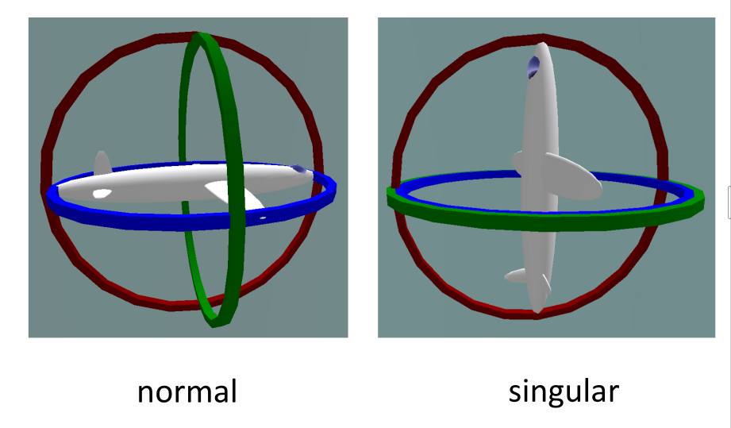
Representations of Rotation
- (Unit) Quaternions
- Extended from complex numbers
- Three imaginary and one real part:
- The imaginary parts satisfy:
- Reasons to use
- Require less memory than rotation matrices
- Easy to keep normalized
- Smaller number of operations (but not always faster on modern CPUs)
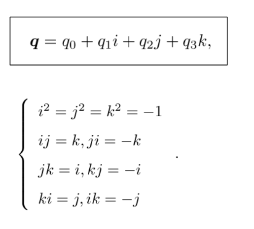
Operations:
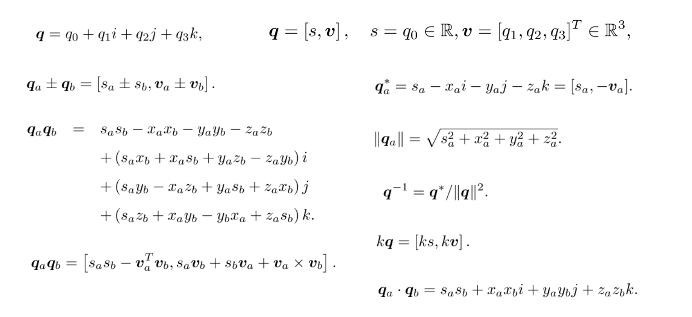
Reasons to use Matrix Groups
- Unified representation of many transformations
- rotation SO(3)
- rigid body transformations SE(3)
- scaling Sim(3)
- and others
- Easy concatenation of transformations with matrix multiplication
- No singularities
- Overparametrized, but for optimisation minimal representation of updates can be used.
The Orthogonal Group \(O(n)\)
A matrix \(A \in \mathcal{M}()n\) is called orthogonal if it preserves the inner product, i.e:
\[\langle Ax, Ay \rangle = \langle x, y \rangle \quad \forall x, y \in \mathbb{R}^n\]
The set of all orthogonal matrices forms the orthogonal group \(O(n)\), which is a subgroup of \(GL(n)\). For an orthonormal matrix \(R\) we have
\[\langle Rx, Ry \rangle = x^T R^T R y = x^T y \quad \forall x, y \in \mathbb{R}^n\]
Therefore we must have \(R^T R = RR^T = I\), in other words:
\[O(n) = \{R \in GL(n) \mid R^T R = I\}\]
The above identity shows that for any orthogonal matrix \(R\) we have \(\det(R^T R) = \det(R)^2 = \det(I) = 1\), which means \(det(R) = \pm 1\).
The subgroup of \(O(n)\) with \(\det(R) = 1\) is called the special orthogonal group \(SO(n)\). In particular, \(SO(3)\) is the group of all 3-dimensional rotation matrices.
The Affine Group
An affine transformation \(L : \mathbb{R}^n \to \mathbb{R}^n\) is defined by a matrix \(A \in GL(n)\) and a vector \(b \in \mathbb{R}^n\) such that:
\[L(x) = Ax + b\]
The set of all such affine transformations is called the affine group of dimensions n, denoted by \(A(n)\). \(L\) defined above is not a linear map unless \(b = 0\). By introducing homogenous coordinates to represent \(x \in \mathbb{R}^n\), \(L\) becomes a linear mapping from
\[ \begin{aligned} L : \mathbb{R}^{n+1} &\to \mathbb{R}^{n+1} \\ \begin{pmatrix} x \\ 1 \end{pmatrix} &\to \begin{pmatrix} A & b \\ 0 & 1 \end{pmatrix} \begin{pmatrix} x \\ 1 \end{pmatrix} \end{aligned} \]
A matrix \(\begin{pmatrix} A & b \\ 0 & 1 \end{pmatrix}\) with \(A \in GL(n)\) and \(b \in \mathbb{R}^n\) is called an affine matrix. It is an element \(GL(n + 1)\). The affine matrices form a subgroup in \(GL(n + 1)\).
Rigid-Body Motion
A rigid-body motion (or rigid-body transformation) is a family of maps
\[ \begin{aligned} g_t : \mathbb{R}^3 &\to \mathbb{R}^3 \\ X &\to g_t(X) \quad t \in [0, T] \end{aligned} \]
which preserve the norm and cross product of any two vectors:
\[ \begin{aligned} |g_t(v)| &= |v| \quad &\forall v \in \mathbb{R}^3 \\ g_t(u) \times g_t(v) &= g_t(u \times v) \quad &\forall u, v \in \mathbb{R}^3 \end{aligned} \]
Since norm and scalar product are related by the polarisation identity
\[\langle u, v \rangle = \frac{1}{4} \left( |u + v|^2 - |u - v|^2 \right)\]
one can also state that a rigid-body motion is a map which preserves inner product and cross product. As a consequence, rigid-body motions also preserve the triple product
\[\langle g_t(u), g_t(v) \times g_t(w) \rangle = \langle u, v \times w \rangle \quad \forall u, v, w \in \mathbb{R}^3\]
which means that they are volume-preserving.
Representation of Rigid-body Motion
Does the above definition lead to a mathematical representation of rigid-body motion?
Since it preserves length and orientation, the motion \(g_t\) of a rigid body is sufficiently defined by specifying the motion of a Cartesian coordinate frame attached to the object (given by an origin and orthonormal orientation vectors \(e_1, e_2, e_3 \in \mathbb{R}^3\)). The motion of the origin can be represented by translation \(T \in \mathbb{R}^3\), whereas the transformation of the vectors \(e_i\) is given by new vectors \(r_i = g_t(e_i)\).
Scalar and cross product of these vectors are preserved:
\[ \begin{aligned} r_i^T r_j &= g(e_i)^T g(e_j) = e_i^T e_j = \delta_{ij} \\ r_1 \times r_2 &= r_3 \end{aligned} \]
The first constraint amounts to the statement that the matrix \(R = (r_1, r_2, r_3)\) is an orthogonal (rotation) matrix: \(R^T R = R R^T = I\), whereas the second property implies that \(\det(R) = +1\), in other words: \(R\) is an element of the group \(SO(3) = \{R \in \mathbb{R}^{3 \times 3} \mid R^T R = I, \det(R) = +1\}\). Thus the rigid-body motion \(g_t\) can be written as:
\[g_t(x) = R x + T\]
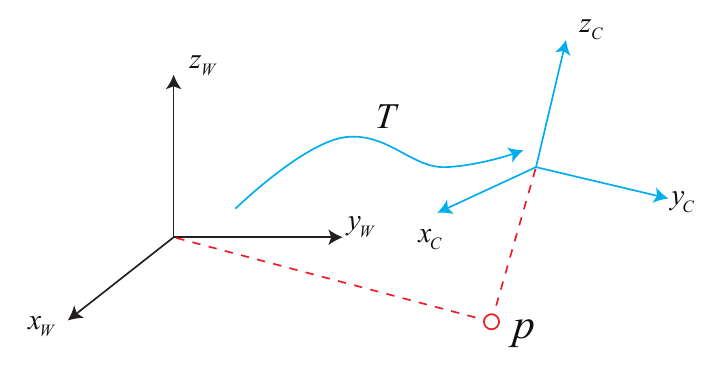
The Euclidean Group
A Euclidean transformation \(L : \mathbb{R}^n \to \mathbb{R}^n\) is defined by an orthogonal matrix \(R \in O(n)\) and a vector \(T \in \mathbb{R}^n\):
\[L(x) = R x + T\]
The set of all such transformation is called the Euclidean group \(E(n)\). It is a subgroup of the affine group \(A(n)\). Embedded by homogenous coordinates we get:
\[E(n) = \left\{ \begin{pmatrix} R & T \\ 0 & 1 \end{pmatrix} \mid R \in O(n), T \in \mathbb{R}^n \right\}\]
If \(R \in SO(n)\), then we have the special Euclidean group \(SE(n)\). In particular \(SE(3)\), represents the rigid-body motions in \(\mathbb{R}^3\).
In summary:
\[ \begin{aligned} SO(n) &\subset O(n) \subset GL(n) \\ SE(n) &\subset E(n) \subset A(n) \subset GL(n + 1) \end{aligned} \]
In Summary
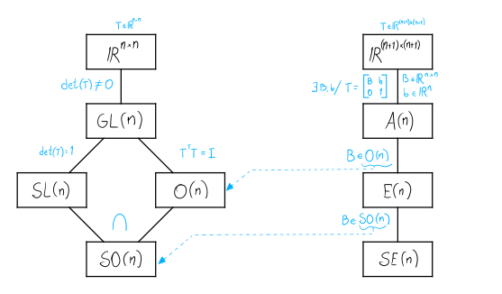
Sophus Library
#include <iostream>
#include <Eigen/Core>
#include <sophus/so3.h>
#include <sophus/se3.h>
int main(int argc, char* argv[]){
Eigen::Matrix3d R_mat;
R_mat << 1, 0, 0, 0, 1, 0, 0, 0, 1;
Sophus::SO3d R_w_c(R_mat); // Rotation from camera to world
std::cout << "R_w_i:\n" << R_w_c.matrix() << std::endl;
Eigen::Vector3d t_w_c;
t_w_c << 1, 2, 3;
std::cout << "t: " << t_w_c.transpose() << std::endl;
Sophus::SE3d T_w_c(
R_w_c,
t_w_c); // Rigid body transformation from camera to world
std::cout << "T_w_c:\n" << T_w_c.matrix() << std::endl;
Eigen::Vector3d p_c; // Point in the camera coordinate frame
p_c << 1, 1, 10;
Eigen::Vector3d p_w = T_w_c * p_c; // Should be (2, 3, 13)
Eigen::Vector4d p_w_hom =
T_w_c.matrix() * p_c.homogeneous(); // Should be (2, 3, 13, 1)
std::cout << "p_w: " << p_w.transpose() << std::endl;
std::cout << "p_w_hom: " << p_w_hom.transpose() << std::endl;
Eigen::Vector3d p_c_new = T_w_c.inverse() * p_w; // Should be (1, 1, 10)
std::cout << "p_c_new: " << p_c_new.transpose() << std::endl;
return 0;
}Exponential Coordinates of Rotation
We will now derive a representation of an infinitesimal rotation. To this end, consider a family of rotation matrices \(R(t)\) which continuously transform a point from its original location (\(R(0) = I\)) to a different one.
\[X(t) = R(t)X_0 \quad R(t) \in SO(3)\]
Since \(\forall t\), \(R(t) R(t)^T = I\), we have \[ \begin{aligned} \frac{d}{dt} R R^T = \dot{R} R^T + R \dot{R}^T = 0 \\ \Rightarrow \dot{R} R^T = - R \dot{R}^T \end{aligned} \]
Thus, \(\dot{R} R^T\) is a skew-symmetric matrix. As shown in the section about the \(\hat{\cdot}\) operator, this implies that there exists a vector \(\omega(t) \in \mathbb{R}^3\) such that:
\[ \begin{aligned} \dot{R}(t) R(t)^T = \hat{\omega}(t) \Longleftrightarrow \dot{R}(t) = \hat{\omega}(t) R(t) \end{aligned} \]
Since \(R(0) = I\), it follows that \(\dot{R}(0) = \hat{\omega}(0)\). Therefore the skew-symmetric matrix \(\hat{\omega}(0) \in \mathfrak{so}(3)\) gives the first order approximation of a rotation:
\[R(t) \approx R(0) + \frac{d}{dt} R(0) t = I + \hat{\omega}(0) t\]
And when \(\Delta t \to 0\), then
\[R(\Delta t) = I + \hat{\omega}(0) \Delta t\]
Lie Group and Lie Algebra
The above calculation showed that the effect of any infinitesimal rotation \(R \in SO(3)\) can be approximated by an element from the space of skew-symmetric matrices
\[\mathfrak{so}(3) = \{ \hat{\omega} \mid \omega \in \mathbb{R}^3 \}\]
The rotation group \(SO(3)\) is called a Lie group. The space \(\mathfrak{so}(3)\) is called Lie algebra.
- Def. A Lie group (or infinitesimal group) is a smooth manifold that is also a group, such that the group operations multiplication and inversion are smooth maps.
As shown above: The Lie algebra \(\mathfrak{so}(3)\) is the tangent space at the identity of the rotation group \(SO(3)\).
An algebra over a field \(K\) is a vector space \(V\) over \(K\) with multiplication on the space \(V\). Elements \(\hat{w}\) and \(\hat{v}\) of the Lie algebra generally do not commute.
One can define the Lie bracket
\[ \begin{aligned} [\cdot, \cdot]& : \mathfrak{so}(3) \times \mathfrak{so}(3) \to \mathfrak{so}(3) \\ [\hat{w}, \hat{v}] &= \hat{w} \hat{v} - \hat{v} \hat{w} \end{aligned} \]
The Exponential Map
Given the infinitesimal formulation of rotation in terms of the skew-symmetric matrix \(\hat{\omega}\), is it possible to determine a useful representation of the rotation \(R(t)\)? Let us assume \(\hat{\omega}\) is constant in time.
Let’s consider the initial value problem of the following ordinary differential equation:
\[ \begin{cases} \dot{R}(t) &= \hat{\omega} R(t) \\ R(0) &= I \end{cases} \]
has the solution
\[ R(t) = \exp(\hat{\omega} t) = \sum_{n=0}^{\infty} \frac{(\hat{\omega} t)^n}{n!} = I + \hat{\omega} t + \frac{(\hat{\omega} t)^2}{2!} + \cdots \]
which is a rotation around the axis \(\omega \in \mathbb{R}^3\) by an angle of \(t\) (if \(|\omega| = 1\)). Alternatively, one can absorb the scalar \(t \in \mathbb{R}\) into the skew symmetric matrix \(\hat{\omega}\) to obtain \(R(t) = \exp(\hat{v})\) with \(\hat{v} = \hat{\omega} t\). This matrix exponential, therefore, defines a map from the Lie algebra to the Lie group:
\[ \begin{aligned} \exp : \mathfrak{so}(3) &\to SO(3) \\ \hat{\omega} &\mapsto \exp(\hat{\omega}) \end{aligned} \]
The Logarithm of SO(3)
As in the case of real analysis one can define an inverse function to the exponential map by the logarithm. In the context of Lie groups, this will lead to a mapping from the Lie group to the Lie algebra. For any rotation matrix \(R \in SO(3)\), there exists \(\omega \in \mathbb{R}^3\) such that \(R = \exp(\hat{\omega})\). Such an element is denoted by \(\hat{\omega} = \log(R)\).
If \(R = (r_{ij}) \neq I\), then an appropriate \(\omega\) is given by:
\[ \begin{aligned} |\omega| &= \cos^{-1} \left( \frac{r_{11} + r_{22} + r_{33} - 1}{2} \right) \\ \omega &= \frac{|\omega|}{2 \sin(|\omega|)} \begin{pmatrix} r_{32} - r_{23} \\ r_{13} - r_{31} \\ r_{21} - r_{12} \end{pmatrix} \end{aligned} \]
For \(R = I\), we have \(|\omega| = 0\), i.e. a rotation by an angle 0. The above statement says: Any orthogonal transformation \(R \in SO(3)\) can be represented by rotating by an angle \(|\omega|\) around an axis \(\frac{\omega}{|\omega|}\) as defined above.
Obviously the above representation is not unique since increasing the angle by multiples of \(2\pi\) will give the same rotation \(R\)
Schematic Visualization of Lie Group and Algebra
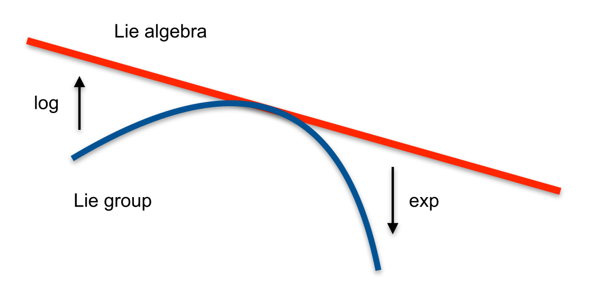
Def. A Lie group is a smooth manifold that is also a group, such that the group operations multiplication and diversion are smooth maps.
Def. The tangent space to a Lie group at the identity element is called the associated Lie algebra.
The mapping from the Lie algebra to the Lie group is called the exponential map. Its inverse is called logarithmic map.
Rodrigues’ Formula
We have seen that any rotation can be computed by \(R = \exp(\hat{\omega})\). There exists a closed-form version of the exponential map for \(\hat{\omega} \in \mathfrak{so}(3)\).
\[\exp(\hat{\omega}) = I + \frac{\sin|\omega|}{|\omega|} \hat{\omega} + \frac{1 - \cos|\omega|}{|\omega|^2} \hat{\omega}^2\]
This is known as Rodrigues’ formula.
Proof Let \(t = |\omega|\) and \(v = \frac{\omega}{|\omega|}\). Then
- \(\hat{v}^2 = v v^T - I\)
- \(\hat{v}^3 = \hat{v} \hat{v}^2 = -\hat{v}\)
- \(\hat{v}^4 = \hat{v}^2 \hat{v}^2 = \hat{v}^2\)
- \(\hat{v}^5 = \hat{v}^3 \hat{v}^2 = -\hat{v}^2\)
- \(\hat{v}^6 = \hat{v}^4 \hat{v}^2 = \hat{v}^2\)
- \(\ldots\)
and
\[ \begin{aligned} & \exp(\hat{\omega}) = \exp(\hat{v} t) = \\ & I + (t - \frac{t^3}{3!} + \frac{t^5}{5!} - \cdots) \hat{v} + (\frac{t^2}{2!} - \frac{t^4}{4!} + \frac{t^6}{6!} - \cdots) \hat{v}^2 = I + \sin(t) \hat{v} + (1 - \cos t) \hat{v}^2 \end{aligned} \]
Lie Algebra for SE(3)
Given a continuous family of rigid-body transformation
\[ \begin{aligned} g : \mathbb{R} &\to SE(3) \\ g(t) &\mapsto \begin{pmatrix} R(t) & T(t) \\ 0 & 1 \end{pmatrix} \end{aligned} \]
we consider
\[\dot{g}(t) g^{-1}(t) = \begin{pmatrix} \dot{R} R^T & \dot{T} - \dot{R} R^T T \\ 0 & 0 \end{pmatrix}\]
As in the case of \(SO(3)\), the matrix \(\dot{R} R^T\) corresponds to some skew-symmetric matrix \(\hat{\omega} \in \mathfrak{so}(3)\)..
Defining a vector \(v(t) = \dot{T} - \hat{\omega} T(t)\), we have:
\[\dot{g}(t) g^{-1}(t) = \begin{pmatrix} \hat{\omega}(t) & v(t) \\ 0 & 0 \end{pmatrix}\]
The matrix \(\hat{\xi} \in \mathfrak{se}(3)\) is called twist and can be parametrized with twist coordinates \(\xi \in \mathbb{R}^6\).
\[ \begin{aligned} \hat{\xi} &= \begin{pmatrix} v \\ w \end{pmatrix}^\wedge &= \begin{pmatrix} \hat{\omega} & v \\ 0 & 0 \end{pmatrix} \\ \xi &= \begin{pmatrix} v \\ w\end{pmatrix} &= \begin{pmatrix} \hat{\omega} & v \\ 0 & 0 \end{pmatrix}^\vee \end{aligned} \]
Exponential map and Logarithm for SE(3)
Similarly to \(SO(3)\) any rigid body transformation can be (not uniquely) represented by \(R = \exp(\hat{\xi})\).
There exists a closed-form version of the exponential map for \(\hat{\xi} = \begin{pmatrix} v \\ w \end{pmatrix}^\wedge \in \mathfrak{se}(3)\):
\[\exp(\hat{\xi}) = \begin{pmatrix} \exp(\hat{\omega}) & J v \\ 0 & 1 \end{pmatrix}\]
where \(J\) is the left Jacobian of \(SO(3)\) and can be computed in closed form:
\[J = I + \frac{1 - \cos\theta}{\theta^2} \hat{\omega} + \frac{\theta - \sin\theta}{\theta^3} \hat{\omega}^2\]
where \(\theta = |\omega|\).
The logarithm also has a closed-form solution:
\[\begin{pmatrix} v \\ w \end{pmatrix} = \log \begin{pmatrix} R & T \\ 0 & 1 \end{pmatrix}^\vee\]
In this case we first find \(\omega = \log(R)^\vee\) with \(SO(3)\) logarithm and then \(v = J^{-1}t\), where the inverse Jacobian also has a closed form:
\[J^{-1} = I - \frac{1}{2} \hat{\omega} + \left( \frac{1}{\theta^2} - \frac{1 + \cos\theta}{2\theta \sin\theta} \right) \hat{\omega}^2\]
Lie Group and Algebra Summary
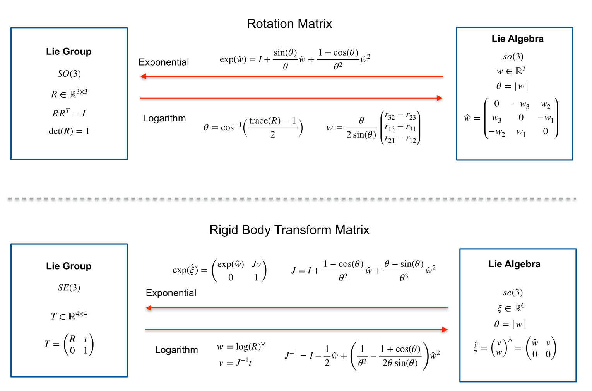
Sophus Expmap and Logmap
#include <iostream>
#include <Eigen/Core>
#include <sophus/so3.h>
#include <sophus/se3.h>
int main(int argc, char* argv[]){
Eigen::Vector3d rand_vec3 =
Eigen::Vector3d::Random() / 100.0; // Small random vector
std::cout << "rand_vec3: " << rand_vec3.transpose() << std::endl;
// Sophus also has a hat and vee operator, but exp and log already include them as shown below
// Sophus::SO3d::hat(rand_vec3);
Sophus::SO3d rand_R = Sophus::SO3d::exp(rand_vec3);
std::cout << "rand_R:\n" << rand_R.matrix() << std::endl;
Eigen::Vector3d log_rand_R =
rand_R.log(); // Should be the same as rand_vec3
std::cout << "log_rand_R: " << log_rand_R.transpose() << std::endl;
// Sophus::Vector6d is an alias for Eigen::Matrix<double, 6, 1>
Sophus::Vector6d rand_vec6 =
Sophus::Vector6d::Random() / 100.0; // Small random vector
std::cout << "rand_vec6: " << rand_vec6.transpose() << std::endl;
Sophus::SE3d rand_T = Sophus::SE3d::exp(rand_vec6);
std::cout << "rand_T:\n" << rand_T.matrix() << std::endl;
Sophus::Vector6d log_rand_T =
rand_T.log(); // Should be the same as rand_vec3
std::cout << "log_rand_T: " << log_rand_T.transpose() << std::endl;
return 0;
}Summary of Lie Groups
- Reasons to use Lie Groups
- Unified representation of many transformations
- rotation \(SO(3)\), \(SO(2)\)
- rigid body transformations \(SE(3)\), \(SE(2)\)
- scaling \(Sim(3)\), \(Sim(2)\)
- and others
- Easy concatenation of transformations with matrix multiplication
- Easy applications
- No singularities (because overparametrizes)
- Minimal parametrization of updates using Lie algebra coordinates (allows unconstrained optimization)
- Unified representation of many transformations
Local Parametrization in Ceres
NOTE: Old example, in reality now we use
ceres_manifold.hpp.
class LocalParameterizationSE3 : public ceres::LocalParameterization {
public:
virtual ~LocalParameterizationSE3() {}
virtual bool Plus(double const* T_raw, double const* delta_raw,
double* T_plus_delta_raw) const {
Eigen::Map<SE3d const> const T(T_raw);
Eigen::Map<Vector6d const> const delta(delta_raw);
Eigen::Map<SE3d> T_plus_delta(T_plus_delta_raw);
T_plus_delta = T * SE3d::exp(delta);
return true;
}
virtual bool ComputeJacobian(double const* T_raw,
double* jacobian_raw) const {
Eigen::Map<SE3d const> T(T_raw);
Eigen::Map<Eigen::Matrix<double, 7, 6, Eigen::RowMajor>> jacobian(
jacobian_raw);
jacobian = T.Dx_this_mul_exp_x_at_0();
return true;
}
virtual int GlobalSize() const { return SE3d::num_parameters; }
virtual int LocalSize() const { return SE3d::DoF; }
};Exercise 1
In the first exercise you should:
- Review the history and current state of SLAM.
- Clone and set up the repository with the code for the practical course.
- Get familiar with CMake parameters used in the project.
- Implement exp and log functions without built-in Sophus functions.
- Enable the tests for this exercise and push your solution to the server for automatic evaluation
- Prove the formula of the Jacobian used in SE(3) exponential map.